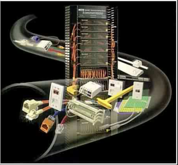

REDES

La Escuela Nacional de la Calidad del Café busca un software de gestión y control de inventarios para garantizar la trazabilidad de la información. Esto permitirá a los usuarios monitorear el proceso desde el suministro de materia prima hasta el producto final, así como el costo total del proceso. El software también permitirá a los usuarios realizar análisis en tiempo real para identificar problemas y tomar decisiones basadas en indicadores clave. Además, el software generará informes personalizados para ayudar al equipo de administración a comprender mejor las operaciones . Para implementar este sistema será necesario contar con un servidor central y sus clientes.